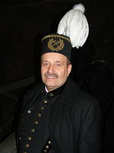
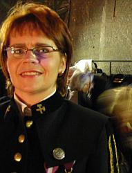
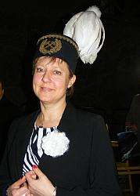
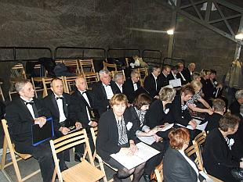
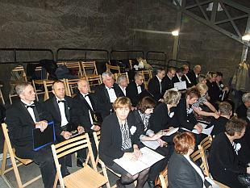

A tymczasem w Cameracie...
.
2012-12-03
Jak co roku uroczystość rozpoczęła msza w kaplicy św. Kingi, której przewodniczył ksiądz biskup Jan Zając.
Mamy też swoją „górniczkę” i górnika, którego niestety nie widać :(

  
Na organach grał nasz kolega, bas Cameraty, Zenon Kulik.
 

© Stowarzyszenie Muzyczne Chór Camerata Wieliczka